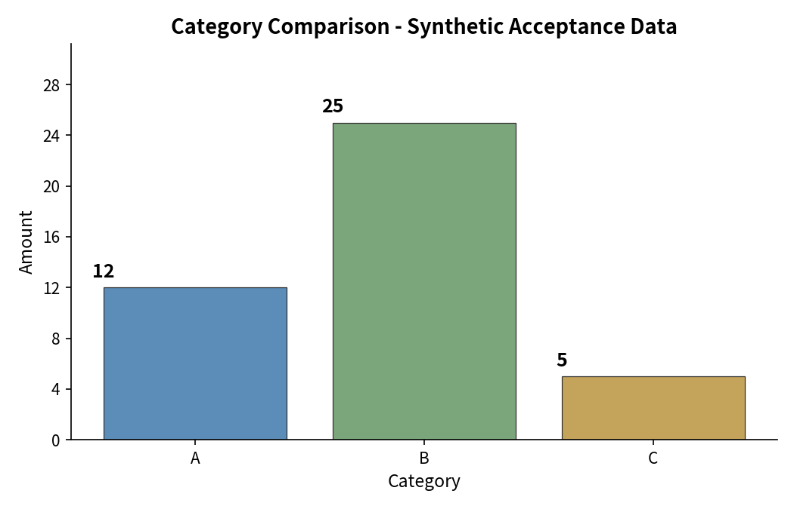

Source: input/data/0/synthetic-html-acceptance.csv · Generated 2026-11-12
Bar chart — amount by category

Color convention: Neutral palette used (no financial rise/fall semantics). The “auto” style profile was selected; its specific semantic-color definition was not available for this non-financial synthetic dataset, so distinct neutral hues distinguish categories without implying positive/negative direction.
| # | Category | Amount |
|---|
This report analyzes a synthetic acceptance CSV — a small, intentionally constructed dataset used for pipeline verification, not real business observations. The file contains 3 records across 3 categories (A, B, C) with integer amounts.
Source: /workspace/input/data/0/synthetic-html-acceptance.csv — read directly from the authorized workspace input path. All computations were performed natively with Python’s csv module; no data was substituted or invented.
Limitations: With only 3 records, statistical summaries (mean = 14.00) are descriptive only and carry no inferential weight. Categories are nominal labels without temporal or hierarchical structure. This dataset is explicitly synthetic and should not be interpreted as representing real transactions, revenues, or business metrics.